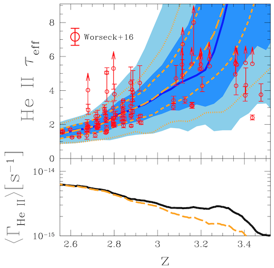
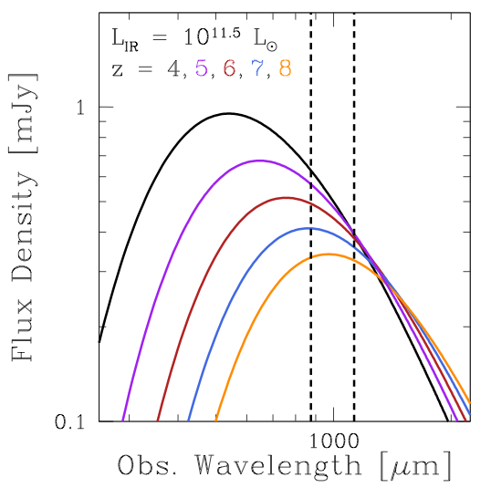

Theory Projects
Fluctuations in the Ionizing Background
The ionizing background, also known as the ultraviolet background (UVB), is the average intensity of ionizing radiation that any point in the universe receives due to distant sources, namely young stars in star-forming galaxies and accretion disks around supermassive black holes (quasars). The ionizing radiation from these sources is attenuated by cosmic expansion and residual neutral gas in the intergalactic medium, typically H I and He II, so the ionizing background is a composite picture of galaxy formation, quasar activity, and large-scale structure formation. While the current broad view of a mostly-uniform ionizing background has withstood observational tests for two decades, I am studing the effect of realistic non-uniformities in the ionizing background.
Helium-Ionizing Background
|  |
| Davies & Furlanetto (2014) |
The helium-ionizing (> 54.4 eV) background in the epoch following He II reionization (z ~ 2–3) is highly fluctuating due to the relative rarity of the dominant radiation sources (bright quasars) compared to the mean free path of the photons.
I developed an extension to the standard Haardt & Madau-style ionizing background model that includes these fluctuations. The reason such a model works is that the He II absorption properties of the IGM depend on the level of the ionizing background itself, and thus a fluctuating background results in a fluctuating opacity to ionizing photons. The resulting ionizing background evolves faster than the standard calculation predicts, and could explain the rapid evolution of the average He II Lyman-α transmission.
(Davies & Furlanetto 2014 — arXiv link)
I am currently working on a 3D version of the 1D model in my previous paper, making many of the same assumptions but allowing a more detailed analysis of proximity effects and spatial correlations in the ionizing background on large scales.
Collaborators: Steve Furlanetto (UCLA), Keri Dixon (Sussex)
| Mesinger & Furlanetto (2009) |
While the fluctuations in the helium-ionizing background are due to the rarity of bright quasars, the clustering of star-forming galaxies that produce most of the hydrogen ionizing photons (> 13.6 eV) at z > 4 can result in similar fluctuations relative to the mean background (Mesinger & Furlanetto 2009). I am investigating the implications of these fluctuations on the ionizing background at very large scales, and how the background is self-regulated by H I absorption in the IGM/CGM.
See also: the resolution of the "flatness problem" in the evolution of the ionizing background, Muñoz et al.
Collaborators: Steve Furlanetto (UCLA), Joey Muñoz (UCSB), Peng Oh (UCSB)
Ionization and Heating of the IGM by Quasars
 |
| Davies, Furlanetto, & McQuinn (MNRAS submitted) |
The relativistically expanding ionized bubbles around quasars can have interesting effects on the IGM during hydrogen and helium reionization due to their detailed ionization and heating structure. These effects include 21 cm absorption/emission features, X-ray heating of the surrounding IGM, the shape of the IGM damping wing, and Lyman-series absorption and emission.
I have developed a one-dimensional radiative transfer scheme to investigate these effects at high resolution in the inhomogeneous IGM. The first application of this model was an investigation of Lyα emission from quasar ionization fronts during reionization.
(Davies, Furlanetto, & McQuinn (MNRAS submitted) — arXiv link)
Collaborators: Steve Furlanetto (UCLA), Matt McQuinn (UCB/UW)
Observation Projects
43 GHz VLBA Observations of the M87 Jet
| 43 GHz M87 VLBA Image |
The radio jet of M87 shows complicated structure when observed with millimeter VLBI, providing great insight into the physics of the jet launching and collimation regions close to the several billion solar-mass black hole.
Originally started as an NSF REU project in 2008, I am working on measuring astrometry of the point-source core at the base of the M87 jet to look for possible core wandering or proper motion effects across 30+ epochs of 43 GHz VLBA observations over the last decade (PI: R. C. Walker).
Collaborators: R. Craig Walker (NRAO), Joan Wrobel (NRAO), Bill Junor, Phil Hardee (Alabama), Chun Ly (STSci)
Revealing Obscured Star Formation at z>6 with ALMA
|  |
| Redshifted FIR SEDs — the "negative K-correction" |
Deep near-infrared (NIR) surveys have discovered hundreds of z > 6 galaxies via color selection methods exploiting the onset of IGM absorption in their rest-frame far-ultraviolet (FUV) spectra. However, for the vast majority of these galaxies, these handful of broadband NIR fluxes are all that we know! While the spectral shapes of these galaxies indicate that they are probably relatively dust-free, there are hardly any direct constraints on their dust content. Extreme quasar host galaxies at these redshifts seem to have copious amounts of dust-obscured star formation, so it is at least physically possible to form dust at early cosmic times.
We have submitted an ALMA proposal to survey a sample of z>6 galaxies at 265 GHz and 343 GHz, corresponding to rest-frame wavelengths in the far-infrared close to the expected peak wavelengths of dust emission. If these galaxies have dust properties similar to those surveyed at lower redshift (z = 3—4), we should be able to detect several of them and place interesting limits on a stack of the individual non-detections. Additionally, for the brightest detections, we will be able to constrain their far-infrared spectral shape, and thus constrain their dust temperatures.
Collaborators: Nate Ross, Steve Furlanetto, Joey Muñoz, Jean Turner, Alice Shapley